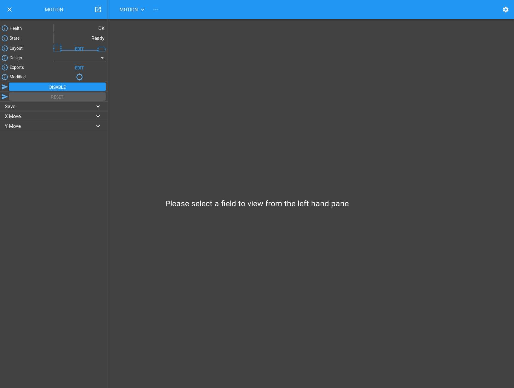
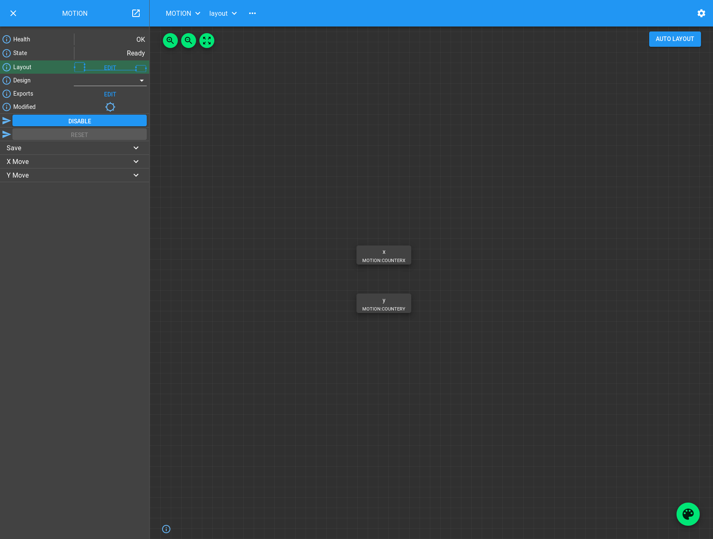
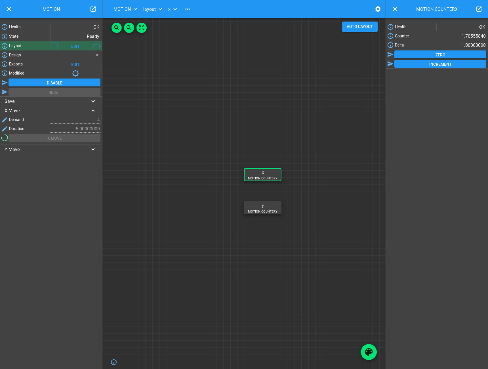
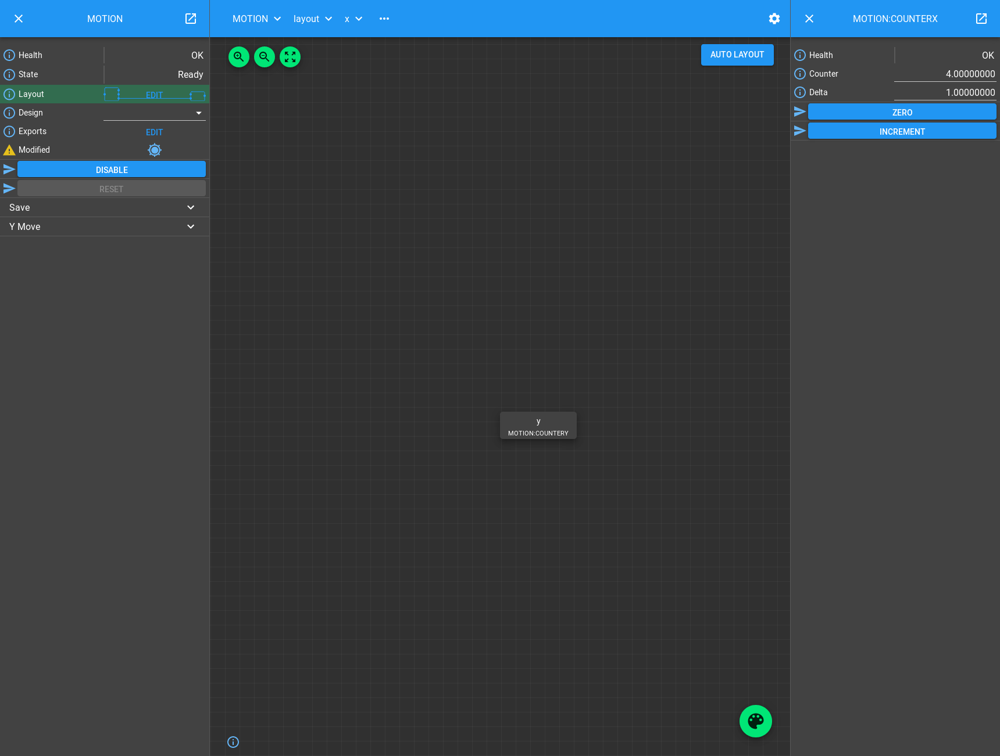
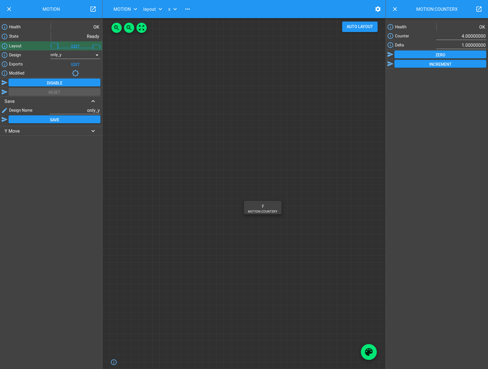
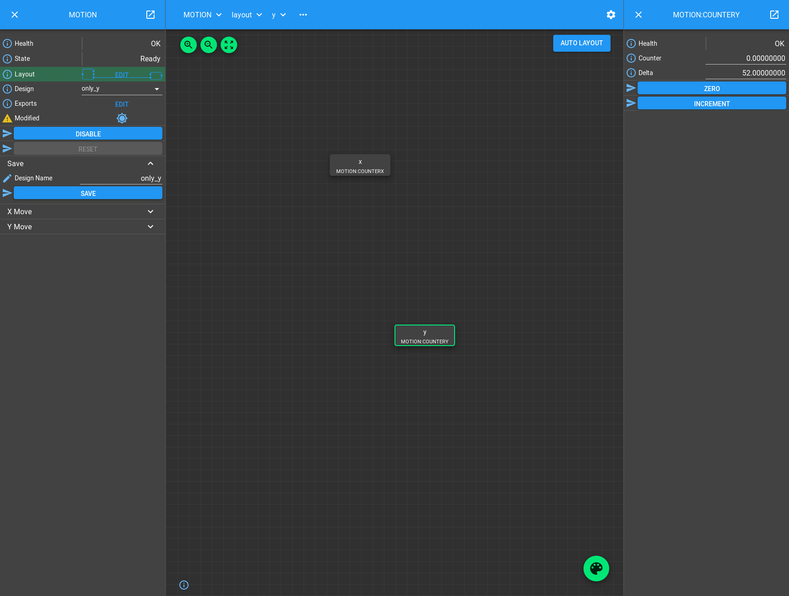

Motion Tutorial
You should already know how to create a Part that attaches Attributes and Methods to a Block. The Blocks we have made in previous tutorials are quite simple and low level and might correspond to the interface provided by EPICS devices: a collection of Attributes that we can set and simple Methods we can call that cause the device to operate in a particular way. We call Blocks like this the Hardware Layer. To get more complicated functionality we need to compose these together into a higher level Device Layer containing Blocks that will control a number of child Hardware Blocks to synchronise them and use them for a particular application.
In this tutorial we will build a simple Device Block that represents motion controller hardware moving two motors. A pair of counter Blocks will serve as “motors”.
Creating Device Blocks
Let’s dive right in and look at the Process Definition
./malcolm/modules/demo/DEMO-MOTION.yaml:
# Define a directory to store config in
- builtin.defines.tmp_dir:
name: config_dir
# Create some Blocks
- demo.blocks.motion_block:
mri: MOTION
config_dir: $(config_dir)
# Add a webserver
- web.blocks.web_server_block:
mri: WEB
First we create a temporary directory to hold saved configs. In production we
would point this to a persistent file-system, but here we ask Malcolm to create
a directory somewhere in /tmp for us.
Apart from the web server block, all that we do here is load a single Motion
Block. We have to look at ./malcolm/modules/demo/blocks/motion_block.yaml to
see what one of those does:
# Define the parameters this Block will take
- builtin.parameters.string:
name: mri
description: Malcolm resource id of the Block
- builtin.parameters.string:
name: config_dir
description: Where to store saved configs
- builtin.defines.docstring:
value: |
Device Block that controls 2 child counters to simulate a motor controller
with move methods
- builtin.controllers.ManagerController:
mri: $(mri)
config_dir: $(config_dir)
description: $(docstring)
# Add the Counter blocks
- demo.blocks.counter_block:
mri: $(mri):COUNTERX
- demo.blocks.counter_block:
mri: $(mri):COUNTERY
# Add Parts to use the Counter blocks within Motion block
- demo.parts.CounterMovePart:
name: x
mri: $(mri):COUNTERX
- demo.parts.CounterMovePart:
name: y
mri: $(mri):COUNTERY
We instantiate two Counter blocks ($(mir):COUNTERX and $(mir):COUNTERY)
and instantiate two CounterMoveParts (x and y) that will connect to them.
We then use a ManagerController to construct our Block.
This tree of Blocks is probably better viewed as a diagram:
Note
Blocks in the Device layer create their child Blocks. This is because their children have only one logical parent, the Device they belong to.
Controller for Device Blocks
All Blocks in the Device Layer control child Blocks. A Controller that
provides functionality aimed at managing child Blocks is called a
ManagerController. It provides functionality like Load/Save, disabling and
enabling child Blocks, and a state machine to protect against these functions
being called at the wrong time. Settings of its children are managed using
Designs which can be swapped between at runtime.
It has the following Attributes:
Attribute |
Description |
|---|---|
|
If something goes wrong, this will show the error message, otherwise it has the value “OK” |
|
The current state the Block is in, determines which Methods and Attributes are writeable at present |
|
A Table of child Blocks, whether they are currently visible (enabled), and their X and Y positions for visualization in the web GUI |
|
The current saved design name. It is a choice (populated at startup) of all the design names that have previously been saved. When selected it will restore the settings of the Block and its children to the contents of the design file |
|
A Table of extra fields that can be promoted up to the parent. (Use to be demonstrated in a later tutorial.) |
|
A read-only LED indicating if any of our settings or our children have changed since the last save |
And the following Methods:
Method |
Description |
|---|---|
|
Disable any functionality, connections, and polling that the Block is currently doing |
|
If Disabled or in Fault state, clear any errors and restart any connections and polling that the Block normally does |
|
Save the attributes of the parent and immediate children to a JSON file with the given design name, in a directory specified when the ManagerController was created. |
And implements the following StateMachine:
Adding functionality to a ManagerController
In the previous tutorials we have implemented a subclass of Part to add
functionality to our Controller. In this tutorial we have to manage a child
Block, so we will subclass ChildPart, which has functions to manage a single
child Block, like Load/Save.
The aim of this tutorial is to make something that looks like a motion controller, so we will make our Part expose a single method “moveX” (or “moveY”) that will “move” it’s child Block by doing a Put to the counter value.
We instantiate two parts, so here are some of the Methods and Attributes created:
Lets take a look at ./malcolm/modules/demo/parts/countermovepart.py to see
how it does this:
import time
from annotypes import Anno, add_call_types
from malcolm.core import PartRegistrar
from malcolm.modules import builtin
# Pull re-used annotypes into our namespace in case we are subclassed
APartName = builtin.parts.APartName
AMri = builtin.parts.AMri
with Anno("The demand value to move our counter motor to"):
ADemand = float
with Anno("The amount of time to get to the demand position"):
ADuration = float
# How long between ticks of the "motor" position while moving
UPDATE_TICK = 0.1
# We will set these attributes on the child block, so don't save them
@builtin.util.no_save("counter")
class CounterMovePart(builtin.parts.ChildPart):
"""Provides control of a `counter_block` within a `ManagerController`"""
def __init__(self, name: APartName, mri: AMri) -> None:
super().__init__(name, mri, stateful=False, initial_visibility=True)
def setup(self, registrar: PartRegistrar) -> None:
super().setup(registrar)
# Method
registrar.add_method_model(self.move, self.name + "Move", needs_context=True)
@add_call_types
def move(
self, context: builtin.hooks.AContext, demand: ADemand, duration: ADuration = 0
) -> None:
"""Move the counter to the demand value, taking duration seconds like
a motor would do"""
start = time.time()
child = context.block_view(self.mri)
distance = demand - child.counter.value
remaining = duration
# "Move" the motor, ticking at UPDATE_TICK rate
while remaining > 0:
child.counter.put_value(demand - distance * remaining / duration)
context.sleep(min(remaining, UPDATE_TICK))
remaining = start + duration - time.time()
# Final move to make sure we end up at the right place
child.counter.put_value(demand)
The first thing to note is the imports, we are pulling in a malcolm module
builtin. Anything that can be instantiated in a YAML file lives in a module
rather than in malcolm.core. By convention we import modules by name into
our namespace rather than importing from them. This makes it clear where things
come from in the code. We also explicitly pull a couple of annotypes into our
namespace (as explained below) for annotating __init__, and create an
annotype that we will use in our move() Method.
Moving on to the class definition, we see a decorator no_save. This defines
the set of Attributes of our child Counter Block that we will set with our
Methods and shouldn’t appear in the design when we save(). In this case
“counter” is the only Attribute we set and therefore don’t want to save.
The CounterMovePart subclasses ChildPart, but this time we do some extra work in
the __init__ method. Whenever we override __init__ it is important to
call the __init__ that we have just overridden, and that is what the
super call does. This is a Python construct that lets us reliably call methods
of our superclass that we have just overridden, even if multiple inheritance is
used. If someone instantiates CounterMovePart, then
super(CounterMovePart, self).__init__ will return the __init__ function of
ChildPart, bound so that self does not need to be passed into it.
Note
It’s not necessary to understand what super does, but it is necessary to
use it when you need to call the method you have just overridden, otherwise
your class may not behave correctly if subclassed and multiple inheritance
is used.
When overriding an __init__ method we need to know what arguments to pass
to the base class and their types. Looking at the docs and sources of
ChildPart.__init we can see:
- class malcolm.modules.builtin.parts.ChildPart(name: Anno(name='APartName', typ=<class 'str'>, description='The name of the Part within the Controller'), mri: Anno(name='AMri', typ=<class 'str'>, description='Malcolm resource id of child object'), initial_visibility: Optional[Anno(name='AInitialVisibility', typ=<class 'bool'>, description='Whether the part is initially visible with no config loaded, None means only if child Source/Sink Ports connect to another Block')] = None, stateful: Anno(name='AStateful', typ=<class 'bool'>, description='If the child is a StatefulController then this should be True') = True)[source]
- Parameters
name (str) – The name of the Part within the Controller
mri (str) – Malcolm resource id of child object
initial_visibility (bool) – Whether the part is initially visible with no config loaded, None means only if child Source/Sink Ports connect to another Block
stateful (bool) – If the child is a StatefulController then this should be True
def __init__(
self,
name: APartName,
mri: AMri,
initial_visibility: UInitialVisibility = None,
stateful: AStateful = True,
) -> None:
We need to pass name and mri straight down to the superclass, but
we know that a Counter Block is not stateful, so we can pass stateful=False,
and we want the child Block to be immediately visible as soon as the parent
Block is initialized, so we pass initial_visibility=True.
We also add a type comment to the __init__ method that tells anyone using
the Part what parameters should be passed to the initializer. As we are passing
the arguments straight down to the superclass, we can reuse the annotypes, which
means we will inherit the description assigned to them.
Note
We pull APartName and AMri into our namespace before using it in the
__init__ type comment. This is so that anyone who subclasses us can
easily reuse the same annotypes without having to go up to our parent to
get them.
In setup() we export a single Method, but as we are expecting to have
many of these Parts in a single Controller, we prefix the Method name with the
name of the Part, so it is unique in the Block. For our example, we have two
CounterMoveParts, x and y, so the resulting Block should have xMove()
and yMove() Methods. The needs_context=True argument tells Malcolm that
when the move Method is called, it should be passed a Context object as the
first argument. This utility object makes us a Block view so we can interact
with our child Block.
Finally we define the move() Method. As well as the Context we requested,
it takes arguments demand and duration which are described by annotypes.
We use the context to create a Block view of the Counter child Block, then
repeatedly get its counter Attribute view and call Attribute.put_value
on it so that the Counter Block sets its counter value to a number of values,
ending up at demand. Each put_value waits for completion (which is almost
instant).
How it looks in the GUI
Let’s run up the demo and see how it looks in the GUI:
[me@mypc pymalcolm]$ pipenv run imalcolm malcolm/modules/demo/DEMO-MOTION.yaml
Loading malcolm...
Python 3.7.2 (default, Jan 20 2020, 11:03:41)
Type 'copyright', 'credits' or 'license' for more information
IPython 7.19.0 -- An enhanced Interactive Python. Type '?' for help.
Welcome to iMalcolm.
self.mri_list:
['MOTION:COUNTERX', 'MOTION:COUNTERY', 'MOTION', 'WEB']
# To create a view of an existing Block
block = self.block_view("<mri>")
# To create a proxy of a Block in another Malcolm
self.make_proxy("<client_comms_mri>", "<mri>")
block = self.block_view("<mri>")
# To view state of Blocks in a GUI
!firefox localhost:8008
In [1]:
Open http://localhost:8008 in your favourite browser and click on the “…” button next to “Select a root block” to select the MOTION Block. You will see the MOTION Block appear in the left hand pane:
If you click on the “Edit” button next to “Layout”, then click “Auto Layout”, you will see the children of the MOTION Block, our two counter Blocks controlled by parts named x and y:
Let’s try a motor move. If you select the “x” Block by left clicking on it, a right hand pane will pop out showing a view of the counter Block just like we saw in the previous tutorial. If you expand the section on the left titled “X Move”, you will see a method that takes a arguments “Demand”, “Duration”, and an “X MOVE” button to run the method. Fill in a demand value and duration and hit the button and you will see the counter value change:
Deleting Blocks
Let’s pretend that a motor is broken and we don’t want to expose “X Move” any more. We can do this by hiding it from the layout, so it doesn’t contribute to the Parent Block any more. If we click on “x” and hit the delete key, or start dragging it to the bin that will appear in the bottom right of the screen, then it will disappear. You will now see that the “X Move” Method has vanished:
This mechanism can be used to enable and disable Parts at runtime without restarting Malcolm, and it opens the way for swapping between dynamic configurations.
Load/Save
To swap between dynamic configurations we use the concept of designs. The state
of the parent and it’s immediate children can be saved to a file and restored
at a later date. These configurations are stored on a per Block basis in the
config_dir specified in the top level YAML file.
If you look at the left hand sign of the screen you should see a “Modified” LED which should be lit. This is saying that there are unsaved changes since either startup or the last save. This is true, as we have deleted one of our parts. Let’s save our current design by expanding the “Save” section, filling in the design name, and hitting “SAVE”:
When you press save, Malcolm will check if it writing to a temporary directory, and if so warn us what it has written with a message like:
malcolm.modules.builtin.controllers.managercontroller.ManagerController.MOTION: Saving to tmp directory /tmp/tmpHGUXzA/MOTION/only_y.json
If we take a look at /tmp/*/MOTION/only_y.json we can see what got saved:
{
"attributes": {
"layout": {
"x": {
"x": 0.0,
"y": 0.0,
"visible": false
},
"y": {
"x": 0.0,
"y": 58.30000305175781,
"visible": true
}
},
"exports": {}
},
"children": {
"x": {
"delta": 1.0
},
"y": {
"delta": 1.0
}
}
}
We can see that x is marked as not visible, and for both x and y we have saved the “delta” value of the Blocks.
Note
The counter value didn’t get saved because we specified it in no_save.
If we had left this out, then each time the motor moved the modified LED
would light, and when we restored a design the ‘motor’ would move!
Let’s try making some changes. Click on the Palette and drag “x” back onto the screen. Click on “y” and change delta, then we will see this:
Notice that “X Move” has reappeared, and tooltip for the Modified LED gives a message about y.delta.value changing as well as the layout change. If we re-select the Design to be “only_y” you should see the Modified LED clear, the X Block vanish, and the “X Move” Method disappear too.
Conclusion
This tutorial has given us an understanding of how ManagerControllers can be used to create Device Blocks that control child Hardware Blocks, how ChildParts can be turned on and off at runtime, and settings loaded and saved to make designs. In the next tutorial we will see another more complicated Device Block that implements a configure/run type interface.